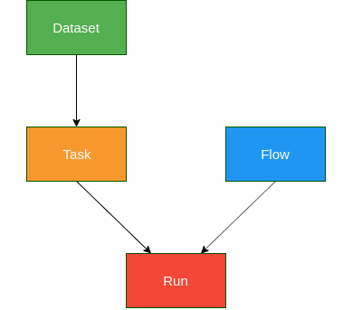

from sklearn import datasets
from sklearn.svm import SVC
from sklearn.ensemble import RandomForestClassifier
from sklearn.model_selection import cross_val_scoreOpenML is an online Machine Learning (ML) experiments database accessible to everyone for free. The core idea is to have a single repository of datasets and results of ML experiments on them. Despite having gained a lot of popularity in recent years, with a plethora of tools now available, the numerous ML experimentations continue to happen in silos and not necessarily as one whole shared community. In this post, we shall try to get a brief glimpse of what OpenML offers and how it can fit our current Machine Learning practices.
Let us jump straight at getting our hands dirty by building a simple machine learning model. If it is simplicity we are looking for, it has to be the Iris dataset that we shall work with. In the example script below, we are going to load the Iris dataset available with scikit-learn, use 10-fold cross-validation to evaluate a Random Forest of 10 trees. Sounds trivial enough and is indeed less than 10 lines of code.
# Loading Iris dataset
X, y = datasets.load_iris(return_X_y=True)
print(X.shape, y.shape)(150, 4) (150,)# Initializing a Random Forest with
# arbitrary hyperparameters
# max_depth kept as 2 since Iris has
# only 4 features
clf = RandomForestClassifier(n_estimators=10, max_depth=2)scores = cross_val_score(clf, X, y, cv=5, scoring='accuracy')
print("Mean score : {:.5f}".format(scores.mean()))Mean score : 0.94000A simple script and we achieve a mean accuracy of 95.33%. That was easy. It is really amazing how far we have come with ML tools that make it easy to get started. As a result, we have hundreds of thousands of people working with these tools every day. That inevitably leads to the reinvention of the wheel. The tasks that each individual ML practitioner performs often have significant overlaps and can be omitted by reusing what someone from the community has done already. At the end of the day, we didn’t build a Random Forest model all the way from scratch. We gladly reused code written by generous folks from the community. The special attribute of our species is the ability to work as a collective wherein our combined intellect becomes larger than the individual sum of parts. Why not do the same for ML? I mean, can I see what other ML practitioners have done to get better scores on the Iris dataset?
Answering this is one of the targets of this post. We shall subsequently explore if this can be done, with the help of OpenML. However, first, we shall briefly familiarize ourselves with few terminologies and see how we can split the earlier example we saw into modular components.
OpenML Components

Image source: https://medium.com/open-machine-learning/openml-1e0d43f0ae13
Dataset: OpenML houses over 2k+ active datasets for various regression, classification, clustering, survival analysis, stream processing tasks and more. Any user can upload a dataset. Once uploaded, the server computes certain meta-features on the dataset - Number of classes, Number of missing values, Number of features, etc. With respect to our earlier example, the following line is the equivalent of fetching a dataset from OpenML.
X, y = datasets.load_iris(return_X_y=True)Task: A task is linked to a specific dataset, defining what the target/dependent variable is. Also specifies evaluation measures such as - accuracy, precision, area under curve, etc. or the kind of estimation procedure to be used such as - 10-fold cross-validation, n% holdout set, etc. With respect to our earlier example, the parameters to the following function call capture the idea of a task.
scores = cross_val_score(clf, X, y, cv=5, scoring='accuracy')Flow: Describes the kind of modelling to be performed. It could be a flow or a series of steps, i.e., a scikit-learn pipeline. For now, we have used a simple Random Forest model which is the flow component here.
clf = RandomForestClassifier(n_estimators=10, max_depth=2)Run: Pairs a flow and task together which results in a run. The run has the predictions which are turned into evaluations by the server. This is effectively captured by the execution of the line:
scores = cross_val_score(clf, X, y, cv=5, scoring='accuracy')Now, this may appear a little obfuscating given that we are trying to compartmentalize a simple 10-line code which works just fine. However, if we take a few seconds to go through the 4 components explained above, we can see that it makes our training of a Random Forest on Iris a series of modular tasks. Modules are such a fundamental concept in Computer Science. They are like Lego blocks. Once we have modules, it means we can plug and play at ease. The code snippet below attempts to rewrite the earlier example using the ideas of the OpenML components described, to give a glimpse of what we can potentially gain during experimentations.
from sklearn import datasets
from sklearn.svm import SVC
from sklearn.ensemble import RandomForestClassifier
from sklearn.model_selection import cross_val_scoreDATASET component
# To load IRIS dataset as a dataset module/component
def dataset():
X, y = datasets.load_iris(return_X_y=True)
return X, yTASK component
# Tasks here define the number of cross-validation folds
# and the scoring metric to be used for evaluation
def task_1(f):
X, y = dataset() # loads IRIS
return cross_val_score(f, X, y, cv=5,
scoring='accuracy')
def task_2(f):
X, y = dataset() # loads IRIS
return cross_val_score(f, X, y, cv=15,
scoring='balanced_accuracy')FLOW component
# Flows determine the modelling technique to be applied
# Helps define a model irrespective of dataset or tasks
def flow_1():
clf = RandomForestClassifier(n_estimators=10, max_depth=2)
return clf
def flow_2():
clf = SVC(gamma='auto', kernel='linear')
return clf RUN component
# Runs essentially evaluates a task-flow pairing
# and therefore in effect executs the modelling
# of a dataset as per the task task definition
def run(task, flow):
return task(flow)# Results for Random Forest
rf_task_1 = run(task_1, flow_1())
rf_task_2 = run(task_2, flow_1())
print("RF using task 1: {:<.5}; task 2: {:<.5}".format(rf_task_1.mean(), rf_task_2.mean()))
# Results for SVM
svm_task_1 = run(task_1, flow_2())
svm_task_2 = run(task_2, flow_2())
print("SVM using task 1: {:<.5}; task 2: {:<.5}".format(svm_task_1.mean(), svm_task_2.mean()))RF using task 1: 0.95333; task 2: 0.94444
SVM using task 1: 0.98; task 2: 0.97222We can, therefore, compose various different tasks, flows, which are independent operations. Runs can then pair any such task and flow to construct an ML workflow and return the evaluated scores. This approach can help us define such components one-time, and we can extend this for any combination of a dataset, model, and for any number of evaluations in the future. Imagine if the entire ML community defines such tasks and various simple to complicated flows that they use in their daily practice. We can build custom working ML pipeline and even get to compare performances of our techniques on the same task with others! OpenML aims exactly for that. In the next section of this post, we shall scratch the surface of OpenML to see if we can actually do with OpenML what it promises.
Using OpenML
OpenML-Python can be installed using pip or by cloning the git repo and installing the current development version. So shall we then install OpenML? ;) It will be beneficial if the code snippets are tried out as this post is read. A consolidated Jupyter notebook with all the code can be found here.
Now that we have OpenML, let us jump straight into figuring out how we can get the Iris dataset from there. We can always browse theOpenML website and search for Iris. That is the easy route. Let us get familiar with the programmatic approach and learn how to fish instead. The OpenML-Python API can be found here.
Retrieving Iris from OpenML
In the example below, we will list out all possible datasets available in OpenML. We can choose the output format. I’ll go with dataframe so that we obtain a pandas DataFrame and can get a neat tabular representation to search and sort specific entries.
import openml
import numpy as np
import pandas as pd# Fetching the list of all available datasets on OpenML
d = openml.datasets.list_datasets(output_format='dataframe')
print(d.shape)
# Listing column names or attributes that OpenML offers
for name in d.columns:
print(name)(3073, 16)
did
name
version
uploader
status
format
MajorityClassSize
MaxNominalAttDistinctValues
MinorityClassSize
NumberOfClasses
NumberOfFeatures
NumberOfInstances
NumberOfInstancesWithMissingValues
NumberOfMissingValues
NumberOfNumericFeatures
NumberOfSymbolicFeaturesprint(d.head()) did name version uploader status format MajorityClassSize \
2 2 anneal 1 1 active ARFF 684.0
3 3 kr-vs-kp 1 1 active ARFF 1669.0
4 4 labor 1 1 active ARFF 37.0
5 5 arrhythmia 1 1 active ARFF 245.0
6 6 letter 1 1 active ARFF 813.0
MaxNominalAttDistinctValues MinorityClassSize NumberOfClasses \
2 7.0 8.0 5.0
3 3.0 1527.0 2.0
4 3.0 20.0 2.0
5 13.0 2.0 13.0
6 26.0 734.0 26.0
NumberOfFeatures NumberOfInstances NumberOfInstancesWithMissingValues \
2 39.0 898.0 898.0
3 37.0 3196.0 0.0
4 17.0 57.0 56.0
5 280.0 452.0 384.0
6 17.0 20000.0 0.0
NumberOfMissingValues NumberOfNumericFeatures NumberOfSymbolicFeatures
2 22175.0 6.0 33.0
3 0.0 0.0 37.0
4 326.0 8.0 9.0
5 408.0 206.0 74.0
6 0.0 16.0 1.0 The column names indicate that they contain the meta-information about each of the datasets, and at this instance, we have access to 2958 datasets as indicated by the shape of the dataframe. We shall try searching for ‘iris’ in the column name and also use the version column to sort the results.
# Filtering dataset list to have 'iris' in the 'name' column
# then sorting the list based on the 'version'
d[d['name'].str.contains('iris')].sort_values(by='version').head()| did | name | version | uploader | status | format | MajorityClassSize | MaxNominalAttDistinctValues | MinorityClassSize | NumberOfClasses | NumberOfFeatures | NumberOfInstances | NumberOfInstancesWithMissingValues | NumberOfMissingValues | NumberOfNumericFeatures | NumberOfSymbolicFeatures | |
|---|---|---|---|---|---|---|---|---|---|---|---|---|---|---|---|---|
| 61 | 61 | iris | 1 | 1 | active | ARFF | 50.0 | 3.0 | 50.0 | 3.0 | 5.0 | 150.0 | 0.0 | 0.0 | 4.0 | 1.0 |
| 41950 | 41950 | iris_test_upload | 1 | 4030 | active | ARFF | 50.0 | 3.0 | 50.0 | 3.0 | 5.0 | 150.0 | 0.0 | 0.0 | 4.0 | 1.0 |
| 42261 | 42261 | iris-example | 1 | 348 | active | ARFF | 50.0 | NaN | 50.0 | 3.0 | 5.0 | 150.0 | 0.0 | 0.0 | 4.0 | 1.0 |
| 451 | 451 | irish | 1 | 2 | active | ARFF | 278.0 | 10.0 | 222.0 | 2.0 | 6.0 | 500.0 | 32.0 | 32.0 | 2.0 | 4.0 |
| 969 | 969 | iris | 3 | 2 | active | ARFF | 100.0 | 2.0 | 50.0 | 2.0 | 5.0 | 150.0 | 0.0 | 0.0 | 4.0 | 1.0 |
Okay, so the iris dataset with the version as 1 has an ID of 61. For verification, we can check the website for dataset ID 61. We can see that it is the original Iris dataset which is of interest to us - 3 classes of 50 instances, with 4 numeric features. However, we shall retrieve the same information, as promised, programmatically.
iris = openml.datasets.get_dataset(61)
irisOpenML Dataset
==============
Name..........: iris
Version.......: 1
Format........: ARFF
Upload Date...: 2014-04-06 23:23:39
Licence.......: Public
Download URL..: https://www.openml.org/data/v1/download/61/iris.arff
OpenML URL....: https://www.openml.org/d/61
# of features.: 5
# of instances: 150iris.features{0: [0 - sepallength (numeric)],
1: [1 - sepalwidth (numeric)],
2: [2 - petallength (numeric)],
3: [3 - petalwidth (numeric)],
4: [4 - class (nominal)]}print(iris.description)**Author**: R.A. Fisher
**Source**: [UCI](https://archive.ics.uci.edu/ml/datasets/Iris) - 1936 - Donated by Michael Marshall
**Please cite**:
**Iris Plants Database**
This is perhaps the best known database to be found in the pattern recognition literature. Fisher's paper is a classic in the field and is referenced frequently to this day. (See Duda & Hart, for example.) The data set contains 3 classes of 50 instances each, where each class refers to a type of iris plant. One class is linearly separable from the other 2; the latter are NOT linearly separable from each other.
Predicted attribute: class of iris plant.
This is an exceedingly simple domain.
### Attribute Information:
1. sepal length in cm
2. sepal width in cm
3. petal length in cm
4. petal width in cm
5. class:
-- Iris Setosa
-- Iris Versicolour
-- Iris VirginicaWith the appropriate dataset available, let us briefly go back to the terminologies we discussed earlier. We have only used the dataset component so far. The dataset component is closely tied with the task component. To reiterate, the task would describe how the dataset will be used.
Retrieving relevant tasks from OpenML
We shall firstly list all available tasks that work with the Iris dataset. However, we are only treating Iris as a supervised classification problem and hence will filter accordingly. Following which, we will collect only the task IDs of the tasks relevant to us.
df = openml.tasks.list_tasks(data_id=61, output_format='dataframe')
df.head()| tid | ttid | did | name | task_type | status | estimation_procedure | evaluation_measures | source_data | target_feature | ... | NumberOfFeatures | NumberOfInstances | NumberOfInstancesWithMissingValues | NumberOfMissingValues | NumberOfNumericFeatures | NumberOfSymbolicFeatures | number_samples | cost_matrix | quality_measure | target_value | |
|---|---|---|---|---|---|---|---|---|---|---|---|---|---|---|---|---|---|---|---|---|---|
| 59 | 59 | 1 | 61 | iris | Supervised Classification | active | 10-fold Crossvalidation | predictive_accuracy | 61 | class | ... | 5 | 150 | 0 | 0 | 4 | 1 | NaN | NaN | NaN | NaN |
| 118 | 118 | 3 | 61 | iris | Learning Curve | active | 10 times 10-fold Learning Curve | predictive_accuracy | 61 | class | ... | 5 | 150 | 0 | 0 | 4 | 1 | 4 | NaN | NaN | NaN |
| 289 | 289 | 1 | 61 | iris | Supervised Classification | active | 33% Holdout set | predictive_accuracy | 61 | class | ... | 5 | 150 | 0 | 0 | 4 | 1 | NaN | NaN | NaN | NaN |
| 1758 | 1758 | 3 | 61 | iris | Learning Curve | active | 10-fold Learning Curve | predictive_accuracy | 61 | class | ... | 5 | 150 | 0 | 0 | 4 | 1 | 4 | NaN | NaN | NaN |
| 1823 | 1823 | 1 | 61 | iris | Supervised Classification | active | 5 times 2-fold Crossvalidation | predictive_accuracy | 61 | class | ... | 5 | 150 | 0 | 0 | 4 | 1 | NaN | NaN | NaN | NaN |
5 rows × 24 columns
# Filtering only the Supervised Classification tasks on Iris
df.query("task_type=='Supervised Classification'").head()| tid | ttid | did | name | task_type | status | estimation_procedure | evaluation_measures | source_data | target_feature | ... | NumberOfFeatures | NumberOfInstances | NumberOfInstancesWithMissingValues | NumberOfMissingValues | NumberOfNumericFeatures | NumberOfSymbolicFeatures | number_samples | cost_matrix | quality_measure | target_value | |
|---|---|---|---|---|---|---|---|---|---|---|---|---|---|---|---|---|---|---|---|---|---|
| 59 | 59 | 1 | 61 | iris | Supervised Classification | active | 10-fold Crossvalidation | predictive_accuracy | 61 | class | ... | 5 | 150 | 0 | 0 | 4 | 1 | NaN | NaN | NaN | NaN |
| 289 | 289 | 1 | 61 | iris | Supervised Classification | active | 33% Holdout set | predictive_accuracy | 61 | class | ... | 5 | 150 | 0 | 0 | 4 | 1 | NaN | NaN | NaN | NaN |
| 1823 | 1823 | 1 | 61 | iris | Supervised Classification | active | 5 times 2-fold Crossvalidation | predictive_accuracy | 61 | class | ... | 5 | 150 | 0 | 0 | 4 | 1 | NaN | NaN | NaN | NaN |
| 1939 | 1939 | 1 | 61 | iris | Supervised Classification | active | 10 times 10-fold Crossvalidation | predictive_accuracy | 61 | class | ... | 5 | 150 | 0 | 0 | 4 | 1 | NaN | NaN | NaN | NaN |
| 1992 | 1992 | 1 | 61 | iris | Supervised Classification | active | Leave one out | predictive_accuracy | 61 | class | ... | 5 | 150 | 0 | 0 | 4 | 1 | NaN | NaN | NaN | NaN |
5 rows × 24 columns
# Collecting all relevant task_ids
tasks = df.query("task_type=='Supervised Classification'")['tid'].to_numpy()
print(len(tasks))13That settles the task component too. Notice how for one dataset (61), we obtain 11 task IDs which are of interest to us. This should illustrate the one-to-many relationship that dataset-task components can have. We have 2 more components to explore - flows, runs. We could list out all possible flows and filter out the ones we want, i.e., Random Forest. However, let us instead fetch all the evaluations made on the Iris dataset using the 11 tasks we collected above.
We shall subsequently work with the scikit-learn based task which has been uploaded/used the most. We shall then further filter out the list of evaluations from the selected task (task_id=59 in this case), depending on if Random Forest was used.
# Listing all evaluations made on the 11 tasks collected above
# with evaluation metric as 'predictive_accuracy'
task_df = openml.evaluations.list_evaluations(function='predictive_accuracy', task=tasks, output_format='dataframe')
task_df.head()| run_id | task_id | setup_id | flow_id | flow_name | data_id | data_name | function | upload_time | uploader | uploader_name | value | values | array_data | |
|---|---|---|---|---|---|---|---|---|---|---|---|---|---|---|
| 0 | 81 | 59 | 12 | 67 | weka.BayesNet_K2(1) | 61 | iris | predictive_accuracy | 2014-04-07 00:05:11 | 1 | janvanrijn@gmail.com | 0.940000 | None | None |
| 1 | 161 | 59 | 13 | 70 | weka.SMO_PolyKernel(1) | 61 | iris | predictive_accuracy | 2014-04-07 00:55:32 | 1 | janvanrijn@gmail.com | 0.960000 | None | None |
| 2 | 234 | 59 | 1 | 56 | weka.ZeroR(1) | 61 | iris | predictive_accuracy | 2014-04-07 01:33:24 | 1 | janvanrijn@gmail.com | 0.333333 | None | None |
| 3 | 447 | 59 | 6 | 61 | weka.REPTree(1) | 61 | iris | predictive_accuracy | 2014-04-07 06:26:27 | 1 | janvanrijn@gmail.com | 0.926667 | None | None |
| 4 | 473 | 59 | 18 | 77 | weka.LogitBoost_DecisionStump(1) | 61 | iris | predictive_accuracy | 2014-04-07 06:39:27 | 1 | janvanrijn@gmail.com | 0.946667 | None | None |
# Filtering based on sklearn (scikit-learn)
task_df = task_df[task_df['flow_name'].str.contains("sklearn")]
task_df.head()| run_id | task_id | setup_id | flow_id | flow_name | data_id | data_name | function | upload_time | uploader | uploader_name | value | values | array_data | |
|---|---|---|---|---|---|---|---|---|---|---|---|---|---|---|
| 144 | 1849043 | 59 | 29015 | 5500 | sklearn.ensemble.forest.RandomForestClassifier... | 61 | iris | predictive_accuracy | 2017-03-03 17:10:12 | 1 | janvanrijn@gmail.com | 0.946667 | None | None |
| 145 | 1853409 | 59 | 30950 | 5873 | sklearn.pipeline.Pipeline(Imputer=openml.utils... | 61 | iris | predictive_accuracy | 2017-03-21 22:08:01 | 1 | janvanrijn@gmail.com | 0.960000 | None | None |
| 146 | 6130126 | 59 | 4163633 | 7108 | sklearn.model_selection._search.RandomizedSear... | 61 | iris | predictive_accuracy | 2017-08-21 11:07:40 | 1 | janvanrijn@gmail.com | 0.960000 | None | None |
| 147 | 6130128 | 59 | 4163634 | 7108 | sklearn.model_selection._search.RandomizedSear... | 61 | iris | predictive_accuracy | 2017-08-21 11:08:06 | 1 | janvanrijn@gmail.com | 0.946667 | None | None |
| 148 | 6715383 | 59 | 4747289 | 7117 | sklearn.model_selection._search.RandomizedSear... | 61 | iris | predictive_accuracy | 2017-09-01 02:56:44 | 1 | janvanrijn@gmail.com | 0.960000 | None | None |
# Counting frequency of the different tasks used to
# solve Iris as a supervised classification using scikit-learn
task_df['task_id'].value_counts()59 1985
10107 25
289 1
Name: task_id, dtype: int64# Retrieving the most used task
t = openml.tasks.get_task(59)
tOpenML Classification Task
==========================
Task Type Description: https://www.openml.org/tt/1
Task ID..............: 59
Task URL.............: https://www.openml.org/t/59
Estimation Procedure.: crossvalidation
Evaluation Measure...: predictive_accuracy
Target Feature.......: class
# of Classes.........: 3
Cost Matrix..........: Available# Filtering for only task_id=59
task_df = task_df.query("task_id==59")# Filtering based on Random Forest
task_rf = task_df[task_df['flow_name'].str.contains("RandomForest")]
task_rf.head()| run_id | task_id | setup_id | flow_id | flow_name | data_id | data_name | function | upload_time | uploader | uploader_name | value | values | array_data | |
|---|---|---|---|---|---|---|---|---|---|---|---|---|---|---|
| 144 | 1849043 | 59 | 29015 | 5500 | sklearn.ensemble.forest.RandomForestClassifier... | 61 | iris | predictive_accuracy | 2017-03-03 17:10:12 | 1 | janvanrijn@gmail.com | 0.946667 | None | None |
| 145 | 1853409 | 59 | 30950 | 5873 | sklearn.pipeline.Pipeline(Imputer=openml.utils... | 61 | iris | predictive_accuracy | 2017-03-21 22:08:01 | 1 | janvanrijn@gmail.com | 0.960000 | None | None |
| 146 | 6130126 | 59 | 4163633 | 7108 | sklearn.model_selection._search.RandomizedSear... | 61 | iris | predictive_accuracy | 2017-08-21 11:07:40 | 1 | janvanrijn@gmail.com | 0.960000 | None | None |
| 147 | 6130128 | 59 | 4163634 | 7108 | sklearn.model_selection._search.RandomizedSear... | 61 | iris | predictive_accuracy | 2017-08-21 11:08:06 | 1 | janvanrijn@gmail.com | 0.946667 | None | None |
| 190 | 6946499 | 59 | 4978397 | 7109 | sklearn.pipeline.Pipeline(imputation=openmlstu... | 61 | iris | predictive_accuracy | 2017-09-02 22:06:32 | 1 | janvanrijn@gmail.com | 0.920000 | None | None |
Retrieving top-performing models from OpenML
Since we are an ambitious bunch of ML practitioners who settle for nothing but the best, and also since most results will not be considered worth the effort if not matching or beating state-of-the-art, we shall aim for the best scores. We’ll sort the filtered results we obtained based on the score or ‘value’ and then extract the components from that run - task and flow.
task_rf.sort_values(by='value', ascending=False).head()| run_id | task_id | setup_id | flow_id | flow_name | data_id | data_name | function | upload_time | uploader | uploader_name | value | values | array_data | |
|---|---|---|---|---|---|---|---|---|---|---|---|---|---|---|
| 3549 | 523926 | 59 | 3526 | 2629 | sklearn.ensemble.forest.RandomForestClassifier(8) | 61 | iris | predictive_accuracy | 2016-02-11 22:05:23 | 869 | p.gijsbers@student.tue.nl | 0.966667 | None | None |
| 4353 | 8955370 | 59 | 6890988 | 7257 | sklearn.ensemble.forest.RandomForestClassifier... | 61 | iris | predictive_accuracy | 2018-04-06 16:32:22 | 3964 | clear.tsai@gmail.com | 0.960000 | None | None |
| 3587 | 1852682 | 59 | 29263 | 5500 | sklearn.ensemble.forest.RandomForestClassifier... | 61 | iris | predictive_accuracy | 2017-03-15 22:55:18 | 1022 | rso@randalolson.com | 0.960000 | None | None |
| 4375 | 8886608 | 59 | 6835139 | 7961 | sklearn.pipeline.Pipeline(Imputer=sklearn.prep... | 61 | iris | predictive_accuracy | 2018-03-17 16:46:27 | 5032 | rashmi.kamath01@gmail.com | 0.960000 | None | None |
| 3107 | 1843272 | 59 | 24071 | 4830 | sklearn.ensemble.forest.RandomForestClassifier... | 61 | iris | predictive_accuracy | 2016-12-08 20:10:03 | 2 | joaquin.vanschoren@gmail.com | 0.960000 | None | None |
# Fetching the Random Forest flow with the best score
f = openml.flows.get_flow(2629)
fOpenML Flow
===========
Flow ID.........: 2629 (version 8)
Flow URL........: https://www.openml.org/f/2629
Flow Name.......: sklearn.ensemble.forest.RandomForestClassifier
Flow Description: Flow generated by openml_run
Upload Date.....: 2016-02-11 21:17:08
Dependencies....: None# Fetching the run with the best score for
# Random Forest on Iris
r = openml.runs.get_run(523926)
rOpenML Run
==========
Uploader Name...: Pieter Gijsbers
Uploader Profile: https://www.openml.org/u/869
Metric..........: predictive_accuracy
Result..........: 0.966667
Run ID..........: 523926
Run URL.........: https://www.openml.org/r/523926
Task ID.........: 59
Task Type.......: Supervised Classification
Task URL........: https://www.openml.org/t/59
Flow ID.........: 2629
Flow Name.......: sklearn.ensemble.forest.RandomForestClassifier(8)
Flow URL........: https://www.openml.org/f/2629
Setup ID........: 3526
Setup String....: None
Dataset ID......: 61
Dataset URL.....: https://www.openml.org/d/61Okay, let’s take a pause and re-assess. From multiple users across the globe, who had uploaded runs to OpenML, for a Random Forest run on the Iris, the best score seen till now is 96.67%. That is certainly better than the naive model we built at the beginning to achieve 95.33%. We had used a basic 10-fold cross-validation to evaluate a Random Forest of 10 trees with a max depth of 2. Let us see, what the best run uses and if it differs from our approach.
# The scoring metric used
t.evaluation_measure'predictive_accuracy'# The methodology used for estimations
t.estimation_procedure{'type': 'crossvalidation',
'parameters': {'number_repeats': '1',
'number_folds': '10',
'percentage': '',
'stratified_sampling': 'true'},
'data_splits_url': 'https://www.openml.org/api_splits/get/59/Task_59_splits.arff'}# The model used
f.name'sklearn.ensemble.forest.RandomForestClassifier'# The model parameters
for param in r.parameter_settings:
name, value = param['oml:name'], param['oml:value']
print("{:<25} : {:<10}".format(name, value))warm_start : False
oob_score : False
n_jobs : 1
verbose : 0
max_leaf_nodes : None
bootstrap : True
min_samples_leaf : 1
n_estimators : 10
min_samples_split : 2
min_weight_fraction_leaf : 0.0
criterion : gini
random_state : None
max_features : auto
max_depth : None
class_weight : None As evident, our initial approach is different on two fronts. We didn’t explicitly use stratified sampling for our cross-validation. While the Random Forest hyperparameters are slightly different too (max_depth=None). That definitely sounds like a to-do, however, there is no reason why we should restrict ourselves to Random Forests. Remember, we are aiming big here. Given the number of OpenML users, there must be somebody who got a better score on Iris with some other model. Let us then retrieve that information. Programmatically, of course.
In summary, we are now going to sort the performance of all scikit-learn based models on Iris dataset as per the task definition with task_id=59.
# Fetching top performances
task_df.sort_values(by='value', ascending=False).head()| run_id | task_id | setup_id | flow_id | flow_name | data_id | data_name | function | upload_time | uploader | uploader_name | value | values | array_data | |
|---|---|---|---|---|---|---|---|---|---|---|---|---|---|---|
| 3630 | 2039748 | 59 | 180922 | 6048 | sklearn.pipeline.Pipeline(dualimputer=helper.d... | 61 | iris | predictive_accuracy | 2017-04-09 01:09:01 | 1104 | jmapvhoof@gmail.com | 0.986667 | None | None |
| 3631 | 2039750 | 59 | 180924 | 6048 | sklearn.pipeline.Pipeline(dualimputer=helper.d... | 61 | iris | predictive_accuracy | 2017-04-09 01:17:39 | 1104 | jmapvhoof@gmail.com | 0.986667 | None | None |
| 3624 | 2012939 | 59 | 157622 | 6048 | sklearn.pipeline.Pipeline(dualimputer=helper.d... | 61 | iris | predictive_accuracy | 2017-04-06 23:29:28 | 1104 | jmapvhoof@gmail.com | 0.986667 | None | None |
| 3618 | 2012930 | 59 | 157613 | 6048 | sklearn.pipeline.Pipeline(dualimputer=helper.d... | 61 | iris | predictive_accuracy | 2017-04-06 23:00:24 | 1104 | jmapvhoof@gmail.com | 0.986667 | None | None |
| 3626 | 2012941 | 59 | 157624 | 6048 | sklearn.pipeline.Pipeline(dualimputer=helper.d... | 61 | iris | predictive_accuracy | 2017-04-07 01:36:00 | 1104 | jmapvhoof@gmail.com | 0.986667 | None | None |
# Fetching best performing flow
f = openml.flows.get_flow(6048)
fOpenML Flow
===========
Flow ID.........: 6048 (version 1)
Flow URL........: https://www.openml.org/f/6048
Flow Name.......: sklearn.pipeline.Pipeline(dualimputer=helper.dual_imputer.DualImputer,nusvc=sklearn.svm.classes.NuSVC)
Flow Description: Automatically created scikit-learn flow.
Upload Date.....: 2017-04-06 22:42:59
Dependencies....: sklearn==0.18.1
numpy>=1.6.1
scipy>=0.9# Fetching best performing run
r = openml.runs.get_run(2012943)
# The model parameters
for param in r.parameter_settings:
name, value = param['oml:name'], param['oml:value']
print("{:<25} : {:<10}".format(name, value))steps : [('DualImputer', <helper.dual_imputer.DualImputer object at 0x7ff618e4d908>), ('nusvc', NuSVC(cache_size=200, class_weight=None, coef0=0.0,
decision_function_shape=None, degree=3, gamma='auto', kernel='linear',
max_iter=-1, nu=0.3, probability=True, random_state=3, shrinking=True,
tol=3.2419092644286417e-05, verbose=False))]
cache_size : 200
class_weight : None
coef0 : 0.0
decision_function_shape : None
degree : 3
gamma : auto
kernel : linear
max_iter : -1
nu : 0.3
probability : True
random_state : 3
shrinking : True
tol : 3.24190926443e-05
verbose : False The highest score obtained among the uploaded results is 98.67% using a variant of SVM. However, if we check the corresponding flow description, we see that it is using an old scikit-learn version (0.18.1) and therefore may not be possible to replicate the exact results. However, in order to improve from our score of 95.33%, we should try running a nu-SVC on the same problem and see where we stand. Let’s go for it. Via OpenML, of course.
Running best performing flow on the required task
import openml
import numpy as np
from sklearn.svm import NuSVC# Building the NuSVC model object with parameters found
clf = NuSVC(cache_size=200, class_weight=None, coef0=0.0,
decision_function_shape=None, degree=3, gamma='auto', kernel='linear',
max_iter=-1, nu=0.3, probability=True, random_state=3, shrinking=True,
tol=3.2419092644286417e-05, verbose=False)# Obtaining task used earlier
t = openml.tasks.get_task(59)
tOpenML Classification Task
==========================
Task Type Description: https://www.openml.org/tt/1
Task ID..............: 59
Task URL.............: https://www.openml.org/t/59
Estimation Procedure.: crossvalidation
Evaluation Measure...: predictive_accuracy
Target Feature.......: class
# of Classes.........: 3
Cost Matrix..........: Available# Running the model on the task
# Internally, the model will be made into
# an OpenML flow and we can choose to retrieve it
r, f = openml.runs.run_model_on_task(model=clf, task=t, upload_flow=False, return_flow=True)
fOpenML Flow
===========
Flow Name.......: sklearn.svm.classes.NuSVC
Flow Description: Nu-Support Vector Classification.
Similar to SVC but uses a parameter to control the number of support
vectors.
The implementation is based on libsvm.
Dependencies....: sklearn==0.21.3
numpy>=1.6.1
scipy>=0.9# To obtain the score (without uploading)
## r.publish() can be used to upload these results
## need to sign-in to https://www.openml.org/
score = []
evaluations = r.fold_evaluations['predictive_accuracy'][0]
for key in evaluations:
score.append(evaluations[key])
print(np.mean(score))0.9866666666666667Lo and behold! We hit the magic number. I personally would have never tried out NuSVC and would have stuck around tweaking hyperparameters of the Random Forest. This is a new discovery of sorts for sure. I wonder though if anybody has tried XGBoost on Iris?
In any case, we can now upload the results of this run to OpenML using:
r.publish()OpenML Run
==========
Uploader Name: None
Metric.......: None
Run ID.......: 10464835
Run URL......: https://www.openml.org/r/10464835
Task ID......: 59
Task Type....: None
Task URL.....: https://www.openml.org/t/59
Flow ID......: 18579
Flow Name....: sklearn.svm.classes.NuSVC
Flow URL.....: https://www.openml.org/f/18579
Setup ID.....: None
Setup String.: Python_3.6.9. Sklearn_0.21.3. NumPy_1.16.4. SciPy_1.4.1. NuSVC(cache_size=200, class_weight=None, coef0=0.0,
decision_function_shape=None, degree=3, gamma='auto', kernel='linear',
max_iter=-1, nu=0.3, probability=True, random_state=3, shrinking=True,
tol=3.241909264428642e-05, verbose=False)
Dataset ID...: 61
Dataset URL..: https://www.openml.org/d/61One would need to sign-in to https://www.openml.org/ and generate their respective apikey. The results would then be available for everyone to view and who knows, you can have your name against the best-ever performance measured on the Iris dataset!
This post was in no ways intended to be a be-all-end-all guide to OpenML. The primary goal was to help form an acquaintance with the OpenML terminologies, introduce the API, establish connections with the general ML practices, and give a sneak-peek into the potential benefits of working together as a community. For a better understanding of OpenML, please explore the documentation. If one desires to continue from the examples given in this post and explore further, kindly refer to the API.
OpenML-Python is an open-source project and contributions from everyone in the form of Issues and Pull Requests are most welcome. Contribution to the OpenML community is in fact not limited to code contribution. Every single user can make the community richer by sharing data, experiments, results, using OpenML.
As ML practitioners, we may be dependent on tools for our tasks. However, as a collective, we can juice out its potential to a larger extent. Let us together, make ML more transparent, more democratic!
Special thanks to Heidi, Bilge, Sahithya, Matthias, Ashwin for the ideas, feedback, and support.
Related readings: * To get started with OpenML-Python * OpenML-Python Github * The OpenML website * Miscellaneous reading on OpenML * To get in touch!